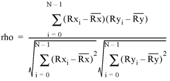

The R_CORRELATE function computes Spearman’s (rho) or Kendalls’s ( tau) rank correlation of two sample populations X and Y . The result is a two-element vector containing the rank correlation coefficient and the two-sided significance of its deviation from zero. The significance is a value in the interval [0.0, 1.0]; a small value indicates a significant correlation.

where Rx i and Ry i are the magnitude-based ranks among X and Y , respectively. Elements of identical magnitude are ranked using a rank equal to the mean of the ranks that would otherwise be assigned.
This routine is written in the IDL language. Its source code can be found in the file r_correlate.pro in the lib subdirectory of the IDL distribution.
Result = R_CORRELATE( X , Y [, D = variable ] [, / KENDALL ] [, PROBD = variable ] [, ZD = variable ] )
Returns a two-element vector indicating the rank correlation coefficient and the significance of its deviation from zero.
An n -element integer, single-, or double-precision floating-point vector.
An n -element integer, single-, or double-precision floating-point vector.
Set this keyword to a named variable that will contain the sum-squared difference of ranks. If the KENDALL keyword is set, this parameter is returned as zero.
Set this keyword to compute Kendalls’s (tau) rank correlation. By default, Spearman’s (rho) rank correlation is computed.
Set this keyword to a named variable that will contain the two-sided significance level of ZD. If the KENDALL keyword is set, this parameter is returned as zero.
Set this keyword to a named variable that will contain the number of standard deviations by which D deviates from its null-hypothesis expected value. If the KENDALL keyword is set, this parameter is returned as zero.
; Define two n-element sample populations:
X = [257, 208, 296, 324, 240, 246, 267, 311, 324, 323, 263, $
305, 270, 260, 251, 275, 288, 242, 304, 267]
Y = [201, 56, 185, 221, 165, 161, 182, 239, 278, 243, 197, $
271, 214, 216, 175, 192, 208, 150, 281, 196]
; Compute Spearman's (rho) rank correlation of X and Y.
result = R_CORRELATE(X, Y)
PRINT, "Spearman's (rho) rank correlation: ", result
; Compute Kendalls's (tau) rank correlation of X and Y:
result = R_CORRELATE(X, Y, /KENDALL)
PRINT, "Kendalls's (tau) rank correlation: ", result
IDL prints:
Spearman’s (rho) rank correlation: 0.835967 4.42899e-006
Kendalls’s (tau) rank correlation: 0.624347 0.000118729
|
4.0 |
Introduced |
A_CORRELATE , C_CORRELATE , CORRELATE , M_CORRELATE , P_CORRELATE